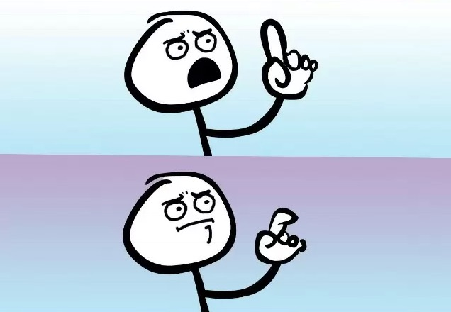
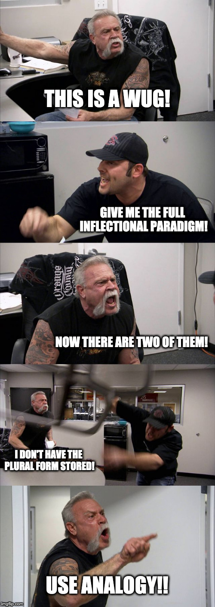
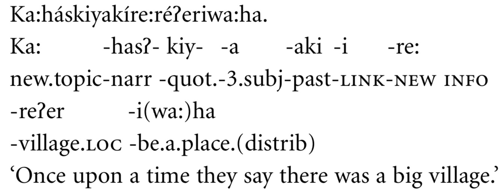

<img class="tall" src="ling_memes/morphologyclickbait.jpg"> (Thanks to an anonymous student!) --- # Whole-word Morphology ### Dr. Will Styler - LIGN 120 --- ### Today's Plan - The Storage of Linguistic Experience - Emergence - Whole-Word Storage - The Weaknesses of Whole-Word Storage --- ## Previously, on LIGN 120 --- ### How are words being built? - "Let's see, I need to talk about gluing this thing, again, in the past. That's 'glue', plus 're-', and '-ed'." - "Let's see, I need to talk about gluing this thing, again, in the past. Looks like 'reglued' is the word I need!" --- # Let's talk about our reading --- ### Bybee 1998 > "In the traditional view, the lexicon is a storage area for all and only the content words or morphemes of a language. The lexicon is relatively static compared to the grammar, which contains all the moving parts of sentence generation: in the metaphor of a dictionary, lexical items are just passive items on a list which wait to be recruited into syntactic structures." --- ### Bybee 1998 Continued > "Rather than arguing that a lexicon of this type does not exist, I am going to argue that if such a lexicon does exist it is because it is emergent from the storage of linguistic experience, which is of a very different nature than the traditional conception of a lexicon would suggest." --- ### "Emergent from the Storage of Linguistic Experience" - This is the key to understanding these approaches --- # The Storage of Linguistic Experience --- ## Is storage expensive? --- ### Morpheme-based Lexicons store only maximally analyzed stems and affixes - Generative approaches to grammar create all and only the attested forms - Morpheme-based lexicons are great for efficiently handling regular patterns - They struggle with irregularity and hard-to-memorize forms - **Computation is cheap, but storage is expensive!** --- ### In this view, we store the minimum required to do assembly - Phonemes, which build morphemes, which build words, which build sentences - Very little storage, lots of computation, language is *generated* --- ### What about the other end of things? <img class="wide" src="morphology/lexicon_storage.jpg"> --- ### What if storage was cheap and easy? --- <section data-background-color=#708cef></section> ### What animal was on the 'Previously, on LIGN 120' slide today? A) A Duck B) A Tiger C) A Hedgehog D) A Squirrel E) A Velociraptor --- <section data-background-color=#708cef></section> ### What animal was on the 'Previously, on LIGN 120' slide last Friday? A) A Duck B) A Tiger C) A Hedgehog D) A Squirrel E) A Velociraptor --- ### We have evidence that we're storing a *lot* of things - What was the route from your childhood home to the grocery store? - The color of your parents first car? - Your first teacher in grade school's name? --- ## Storing Linguistic Experience --- ### What is Linguistic experience? - Words, phrases, and sentences - Individual phonetic realizations of words - **Every single word ever spoken to you** - Potentially with metadata --- ### Are we storing individual speech tokens? - Lightfoot 1989 found listeners retained familiarity with unknown talkers' voices after **10 days** - <small>Lightfoot, N. (1990). Effects of familiarity on serial recall for spoken word lists. The Journal of the Acoustical Society of America, 87(S1):S70–S71.</small> - Goldinger & Azuma 2004 showed that *individual tokens* affect listener production **6 days after hearing them** - <small>Goldinger, S. D. and Azuma, T. (2004). Episodic memory reflected in printed word naming. Psychon Bull Rev, 11(4):716–722.</small> - What does your BFF sound like? - *So, it's not insane to think that we're storing a lot of data* --- ### The proposed unit of storage could be *acoustic* representations of *words* <img class="wide" src="phonmedia/sky.png"> --- ### Bye bye, Phonemes and Morphemes! - Words are stored as monolithic acoustic chunks - We are storing the *surface forms* - We don't need phonemes nor phonological processing - The smallest unit of storage is the acoustic word, stored with its semantic reference to the real world --- ### 'Word' doesn't just mean 'thing bounded by spaces' - Anything that happens frequently and without variation could be stored - "Mai Tai", or "For all intents and purposes", "Inflectional Morphology" - Set phrases could be stored as 'words' --- ## I know what some of you are thinking -  --- ### "How can such a model account for..." - The 'felt' reality of phonemes and morphemes? - Phonological rules? - Morphological productivity? - Morphological creativity? - ... and, uh, Language? --- # Emergent Grammar --- ## Emergence When an entity is observed to have properties that its parts do not have on their own --- <img class="wide" src="img/snowflake.jpg"> --- --- ## How would you describe this complex pattern? <img class="wide" src="img/langtonsant2.gif"> --- ### Langton's Ant > At a white square, turn 90° right, flip the color of the square, move forward one unit. At a black square, turn 90° left, flip the color of the square, move forward one unit <img class="wide" src="img/langtonsant2.gif"> --- ### Complexity can emerge despite simple rules - We don't need elaborate rules to be a *part* of the system for the system to have elaborate patterns! --- ## Emergence in Language --- ### Let's say we've memorized a *lot* of words - We know acoustic forms, and their mappings to semantic meanings - We are sitting on a huge pile of forms with meanings - **How does morphology work?** --- <img class="small" src="morphology/sandwich_shop.jpg"> <img class="small" src="morphology/vending_machine.jpg"> --- ### We grab the word we need in the moment from the pile - ... and plug it into the sentence(s) - No phonology or morphology needed! - Frequency effects come for free! - More on this Wednesday! --- ### ... but what about creativity and productivity! - "How are you going to handle the wugs?" ---  --- ### Analogy - There are lots of form-meaning correspondences in the words we've memorized - *We can take advantage of those to build new, understandable forms!* --- <img class="wide" src="morphology/bybee_analogy.jpg"> --- ### Sub-word units don't *exist*, they *emerge* - 'able' is just that thing that is shared among all those words having to do with possibility - '-en' doesn't occur in many plural forms, that can't be a thing - Maybe 'cran-' is a type of berry? - If 'affixed' forms occur often enough, and their 'bare stems' occur often enough, we can come to 'see' the affix as an independent entity --- ### Analogy allows productivity - "Wug. That's like drug, or hug, or dug, or rug. When I talk about two of those things, it seems to always end with this -z gesture. So, [wʌgz]?" - Phonological and morphological rules are just formalizations of patterns visible across attested surface forms - (which is relatively uncontroversial) - Grammar comes from statistical patterns in language - These are quantifiable and testable! - This is exactly how reanalysis works, even in a generative world! --- ### So, wrapping back... > "Rather than arguing that a lexicon of this type does not exist, I am going to argue that if such a lexicon does exist it is because it is emergent from the storage of linguistic experience, which is of a very different nature than the traditional conception of a lexicon would suggest." --- ### Usage-based or 'Exemplar' method strengths - Accounts easily for many phonetic phenomena - Phonology comes 'for free' - Frequency-based effects are built in to the model - Easily quantifiable and testable, *given sufficient data* - Handles notions of morphology with less complexity! - **It's complicated, but it works!** --- # Weaknesses of the Whole-Word Lexicon --- ## Reality of Bulk-Storage --- ### This depends on a big assumption about storage - If we can't store this much, these theories are DOA - ... but it sure seems like we can --- ## Morphemes sure seem real --- ### Phonological rules can seem to privelege morphemes - "This is legal across morphemes, but not within" - "This can only be found in this one suffix" --- ### Morphological rules can seem based on derivation - Dutch "ge-" only works if there are no other derivational affixes - gesproken, but \*gebesproken - Other rules depend on the presence of absence of certain morphemes - "Attach this as a prefix on a bare stem, but use this suffix if there's other morphology there" --- ## Morphologically Complex Languages --- ### How do we handle agglutinating languages? <img class="wide" src="lotwimg/agglutinatingturkish.png"> --- ### What about polysynthetic languages?  --- ### Is the 'word' a sane level of storage when it is often the largest linguistic unit? - If there's a limited number of affixes, storage is tractable - Imagine you could add a single noun to a single verb in a language... - Your number of stored items increases by [#InflectedVerbForms]*[#Nouns] --- ## 'Word' remains tricky --- ### When we store whole words, what is that? - How do we differentiate words from sentences? - Idioms? - Sub-parts? - 'Word' is tough, here, too. --- ## This is tough for actual analysis --- ### Usage-based methods require huge amounts of data - Saying anything meaningful about data requires statistical generalizations across that data - "How often does this form occur relative to that one?" - "How regularly is this affix attested across the language?" - Usage-based Linguistics depends on easy access to huge amounts of data - This is intractable for language documentation - You can't 'describe a language' using usage-based methods - Just individual phenomena! --- ### 'Analogy' turns into generative rules quickly - Are emergent morphemes so different from stored ones? - If we compute the grammar as needed, and make reference to that grammar, aren't we back where we started? - It's very hard to describe big patterns without some sort of generalizations! --- ### Generative linguistics is like picking up broken glass in carpet - Disposing of the big chunks is easy and effective - You're gonna spend a long time chasing down those last slivers - ... and you're still gonna need some tweezers from time to time --- ### Usage-based Linguistics is like picking up a dumptruck full of needles on a smooth concrete floor - The task is incredibly simple, and 100% effective - Once you're done with an area, you're done - ... but it's going to take you forever - ... and you'll probably want something more efficient for a big room! --- ### Wrapping Up - Whole-Word storage privileges computation over storage - It replaces a great deal of complexity with bags of words - Analogy allows novel forms and productivity - It has some weaknesses, both with the seeming reality of sub-word chunks, in complex morphology, and in practical description --- ### For Next Time - We'll talk about frequency as a force in morphology! - ... which absolutely bears on this discussion --- <huge>Thank you!</huge>